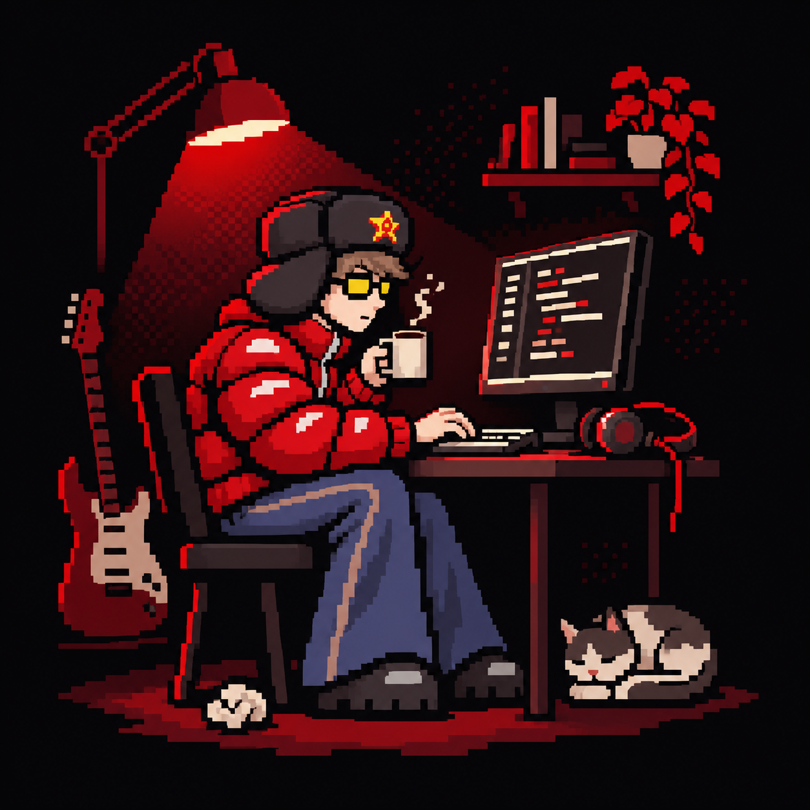

Дизайн в работе.
Текущий визуальный курс: глубокий чёрный, красный свет, лёгкое зерно, крупная типографика и пиксельные сцены. Новый логотип ещё не выбран.

Пробный мини-арт. Это художественная сцена для личного сайта.
Текущий визуальный курс: глубокий чёрный, красный свет, лёгкое зерно, крупная типографика и пиксельные сцены. Новый логотип ещё не выбран.

Пробный мини-арт. Это художественная сцена для личного сайта.